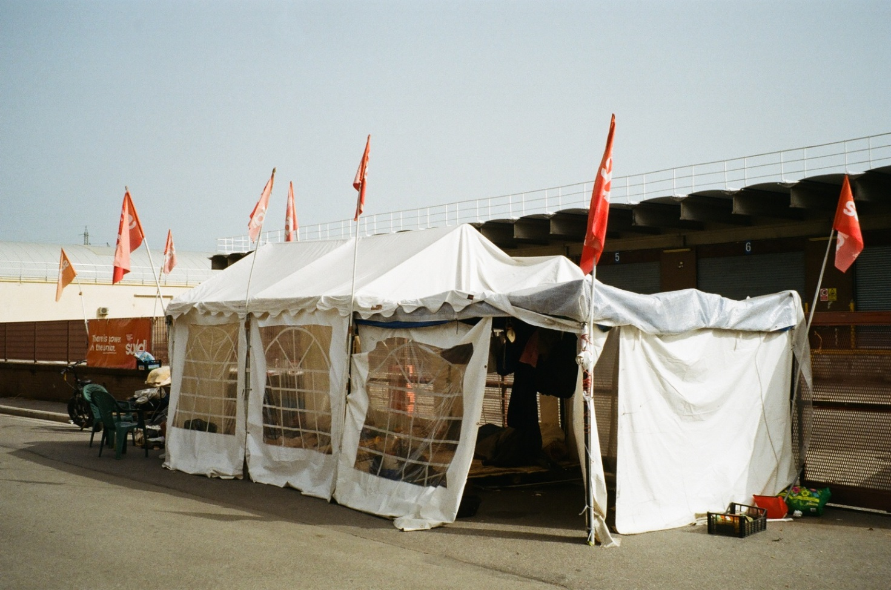

Una mattina al picchetto con Sudd Cobas
Come un sindacato costruito dal basso sta aiutando operai e operaie nella lotta per un lavoro dignitoso. Un racconto in prima persona dalla vertenza Acca.

Da un paio di giorni lo scirocco spingeva le polveri del Sahara sulla nostra penisola, l'aria scintillava di una luce lattiginosa e le temperature superavano di nuovo i trentacinque gradi. Sempre meglio delle tormente che allagano l'asfalto, con l'acqua che da sotto entra nei gazebo e ammolla ogni cosa: materassi, coperte, provviste, vestiti, libri... Quando si sente arrivare la tempesta, bisogna correre, subito. Ficcare tutto ciò che si può in macchina, chiudersi dentro e aspettare che passi. Poi uscire e lentamente smontare, stendere sotto al sole quel che rimane e aspettare. Aspettare davanti al magazzino Acca di Campi Bisenzio (Fi), per bloccare i cancelli e impedire l'ingresso e l'uscita delle capi d'abbigliamento che da lì vanno in tutta Europa. È così che va avanti dal 21 giugno: ogni giorno, ogni notte, in ogni momento, quei due gazebo sono abitati da attivisti/e e operai che sorvegliano chi entra e chi esce. È così che abbiamo trovato, la mattina del 28 agosto, sdraiati sulle brandine e sui materassi, le attiviste e gli operai iscritti al Sudd — Sindacato Unione Democrazia Dignità. Erano là per difendere il loro lavoro, minacciato dalle continue manovre illegali dei vertici di Acca, azienda a conduzione cinese che, da anni, sfrutta, minaccia e percuote i novanta operai dipendenti, la maggior parte di origine pakistana e bangladese.
I picchetti ai cancelli di Acca andavano avanti a oltranza da settanta giorni in quattro località della piana fiorentina: Seano, Agliana, Osmannoro e Campi Bisenzio. La resistenza alla violenza dei «padroni» dell'azienda ha avuto inizio nel 2023, quando gli operai hanno cominciato a sindacalizzarsi e a chiedere un contratto di lavoro legale, che rispettasse i turni di otto ore per cinque giorni a settimana contro le dodici ore sottopagate sette giorni su sette, regime di lavoro a cui erano fino ad allora sottoposti. I capi non ci stavano, li hanno seguiti sotto casa alla sera; con le mazze hanno spaccato le auto, le bici, li hanno intimiditi. Il sindacato ha risposto così: attiviste e attivisti si sono organizzate per accompagnare personalmente gli operai in macchina. I padroni, vedendo le macchine con gli italiani, hanno fatto cessare gli attacchi; poco dopo, i lavoratori hanno ottenuto il contratto otto per cinque. Grande vittoria. Nel 2025 l'azienda è uscita vittoriosa dalla «guerra delle grucce», il conflitto dal carattere mafioso combattuto a colpi di pacchi incendiari e spranghe fra le aziende del territorio per assicurarsi le commesse dalle grandi aziende di moda. In tutto ciò, Acca si trova sotto custodia giudiziaria per presunta frode fiscale ai danni dello Stato per tasse e contributi non pagati pari a 71 milioni di euro. È in questo clima che, a giugno, sindacato e operai hanno fiutato la manovra decisiva: l'azienda stava progettando di chiudere il magazzino per riaprire altrove sotto un altro nome, licenziare gli iscritti al sindacato e assumere lavoratori nuovi, ripartendo da zero. È per bloccare questa manovra che il 21 giugno scorso è scattato lo sciopero.
Due giorni dopo, i padroni hanno assaltato il picchetto di Seano. La mattina avevano già investito un operaio, finito in pronto soccorso. Nel pomeriggio sono arrivati davanti al magazzino di Seano (PO), sono scese duecento persone dai furgoni bianchi, alcune armate di mazze e bastoni, per rompere il blocco dei manifestanti e riaprire il lavoro. Vengono presi alla sprovvista anche i pochi agenti delle forze dell'ordine che si trovavano già là. Se ne sono andati solo dopo aver distrutto i gazebo.
Ancora: all'alba del 3 luglio le forze dell'ordine si sono presentate al picchetto di Seano con ordine di sgombero e sequestro preventivo della merce bloccata nel magazzino. L'abbigliamento doveva immediatamente partire: stavano iniziando i saldi. Il giorno dopo gli agenti si sono ripresentati davanti ai gazebo prontamente rimessi in piedi: «Ragazzi, tutto bene?»
A raccontarci questa storia è E., una ragazza poco più che ventenne. Ci ha accolto con un sorriso e una stretta di mano dalla brandina piazzata all'ombra, fuori dal gazebo bianco. Le spalle arrossate dal sole, fumava un drum. Fumavano tutti il drum, uno dopo l'altro: «Che vuoi fare se no?»
«È difficile non pensare che sarebbe meglio che chiudesse, questa fabbrica», ci ha confessato. Ma se andasse così, gli operai perderebbero il lavoro. Bisogna quindi che i tavoli delle trattative, promossi dalla Provincia di Prato e avviati proprio qualche giorno prima dopo una inaspettata chiamata della dirigente, vadano bene. Proprio mentre stavamo parlando avveniva l'incontro, erano tutti ottimisti. E., da due anni e mezzo attivista nel Sudd, si è fatta tutto lo sciopero contro Acca. Questo significa dormire in strada nel gazebo, una notte sì e una no. Tornare a casa, farsi la doccia, mangiare, rientrare nel gazebo. Significa attuare quello che ormai è il motto del sindacato: «devi durare un secondo in più di loro». Le ho chiesto se non sia difficile fare questo tipo di vita. Lo è, a volte lo stress è molto forte, «ma per me il sindacato sta qua», mi ha risposto alzando la mano sopra la testa.
Dopo l'assalto e lo sgombero la reazione è stata immediata. Attiviste/i e operai hanno fatto leva sulla «rabbia buona e sana» e «gli hanno fatto il culo, iniziando a dargliene secche a diritto, trovando i carichi illegali e i magazzini dove spostavano il lavoro, come questo». Queste parole sono di S., poco più grande di E., da due anni nel sindacato, si barcamena fra l'attivismo, il lavoro come assistente ad una persona con disabilità e tutto il resto. Al telefono fumava un drum organizzando turni e spostamenti. Le ho chiesto se occupava una posizione particolare nel sindacato. «No, non esistono posizioni particolari», ha risposto, «o una organizzazione verticale, siamo tutti sullo stesso piano, tutti con le stesse responsabilità». Ci sono però quattro persone che sono dentro da più di tutti, e che sono un po' la faccia del sindacato, oltre a seguire in prima persona le trattative.
Sono proteste che non potrebbero avvenire in Pakistan, ci ha spiegato Sa., che ha vissuto in altri cinque Paesi ma in Italia si trova benissimo e non se ne andrebbe mai. Era lì da giugno, tornava quando può a casa a lavarsi e a prendere acqua e ghiaccio, come gli altri. «Loro sono la nostra forza», ci hanno spiegato le attiviste. È proprio così, mi sono detto, si aiutano reciprocamente. Attivisti e attiviste ricevono qualcosa di molto prezioso, una comunità e qualcosa che dà valore alla vita, qualcosa per cui lottare, un significato.
L'ottimismo che si respirava quel giorno si rivelò ben riposto. La sera successiva era un venerdì; avevo ritrovato i «compagni» in sciopero all'assemblea congiunta fra il movimento Insorgiamo, che da cinque anni occupa e promuove la riconversione ecologica della fabbrica GKN a Campi Bisenzio, e Sudd Cobas. La notizia era arrivata proprio quella sera: l'accordo per il reintegro di sessanta operai (tutti gli iscritti al sindacato più un'altra ventina), con la promessa di assumere i restanti trenta alla prima occasione, era stato firmato dall'azienda. Quella sera si ballò e, chi poteva, bevve; gli altri, come sempre, fumarono.
La funzione del sintomo tra Freud e Peirce
All'occasione di scegliere il titolo per questo scritto, non avevo alcuna idea di dove sarei andato a parare: le idee di cui scrivo prendono forma con lo stesso fatto di scriverle, e riscriverle. Sapevo che avrei parlato di Peirce, citato da Lacan nel Seminario XXIII. Lo cita, en passant, in due punti, apparentemente slegati fra di loro. In entrambi capita quando Lacan parla dell'atto della nominazione, atto a cui si autorizza nientemeno che il primo uomo Adamo, il padre dei Nomi-del-Padre, se vogliamo; atto a cui si dedica anche Lacan, proprio in quelle pagine, mentre rimprovera a Peirce di non aver chiamato le cose con il loro nome. Lui invece sì che l'ha fatto: le ha chiamate simbolico, immaginario e reale, «nell'ordine giusto»1. L'enigma è tentar di capire cosa intendesse con questo ordine giusto, e perché le cose debbano esser chiamate proprio come dice lui, e non, ad esempio, Primità, Secondità e Terzità, come aveva avanzato Peirce. Non che siano concetti del tutto sovrapponibili, ma con un po' di buona volontà si possono tracciare gli estremi per un confronto, che riserbiamo però a altra occasione.
Parlare di Peirce non è per niente facile: è un autore che ha scritto moltissimo e quel che ha scritto non è di facile comprensione. Può giovare dunque estrarre piccoli pezzi, basi del suo pensiero, che possono tornarci utili.
Una succinta formula, la massima pragmatica, è quel di cui oggi tratteremo. Comparsa in un articolo del 1878, dal titolo accattivante, davvero statunitense, How to make our ideas clear, stabilisce che per distinguere il significato di un pensiero (oggetto), occorra che si determinino i suoi esiti pratici e tangibili, e che in tali si esaurisce il suo significato. Detto con le sue parole: «non vi è distinzione di significato per fine che sia, che possa consistere in altro che in una possibile differenza pratica»2. Dunque, il significato di un'idea, un oggetto o un evento risiede nelle «abitudini che essa produce»3. Nell'esempio usato da Peirce, il significato della «Forza»4 corrisponderebbe, né più né meno, agli effetti pratici e concreti del suo uso. Conosciuti questi, non ci sarebbe altro da sapere sul significato della forza. Sarebbe dunque solo considerandone gli esiti concreti, e niente più di essi, che possiamo determinare a posteriori il significato di un'idea, di un evento o di altro oggetto.
Ora, chiediamoci cosa c'incastra questo discorso con la psicoanalisi, addirittura con Variazioni di sintomi. Seguendo Freud, ogni cosa ha un significato: ebbene, qual è il significato del sintomo? Ha del significato, che corrisponde, almeno in parte, all'uso che ne fa il soggetto, a quelli che si chiamano i vantaggi secondari del sintomo. Il sintomo sarebbe dunque comprensibile — quantomeno il sintomo isterico, si vedrà per il sinthomo — nella misura in cui se ne osservano gli esiti concreti, ossia ciò che la condizione in cui il sintomo mette il soggetto gli permette di fare, insieme a ciò che gli impedisce di fare; nel modo in cui lo fa o non lo fa agire, dunque negli «abiti» e nelle «abitudini» che gli impone.
Da notare che nella concezione di Peirce, l'oggetto e il suo significato appaiono ribaltati nelle loro posizioni che si credono convenzionali, a cui siamo abituati a riferirci. L'esito risignifica in après coup l'atto, in modo simile a quanto avviene nella psicoanalisi. Niente di nuovo per chi conosce un poco la materia: la significazione a posteriori, dal doppio tempo del trauma alle Costruzioni nell'analisi, costituisce uno dei fondamenti del pensiero freudiano.
Rimane però una distanza fra Freud e Peirce, che si avverte in due momenti. Freud ipotizza l'inconscio come istanza ove collocare la sfera del significato, mentre Peirce non sente questa necessità. Per lui non ce n'è bisogno: il significato di una cosa è il suo effetto. Ancora, Peirce appare convinto che col suo metodo si possa raggiungere una definizione vera e definitiva di oggetti e pensieri, renderli chiari una volta per tutte. Al contrario, Freud rimarca come non solo le interpretazioni siano passibili di revisione durante il corso dell'analisi, ma pure che nel discorso permanga sempre qualcosa che sfugge alla possibilità di essere significata, quella Cosa che non vuole andar giù.
1. Jacques Lacan, Seminario XXIII (2005), Astrolabio – Ubaldini Editore, Roma 2006, p. 117.
2. Charles Sanders Peirce, Come render chiare le nostre idee (1878), in Id., Scritti scelti, UTET, Torino 2005, p. 214.
3. Ibidem.
4. Ibidem, pp. 217-218.
"È naturale donare": reciprocità e comunità in Extinction Rebellion
Durante la fase di preparazione delle interviste per la mia ricerca su Extinction Rebellion (XR), ho cercato di costruire le domande in modo da non influenzare gli interlocutori con le mie aspettative. Dopo aver esplorato con loro diverse aree del movimento, volevo capire cosa si aspettassero davvero dalla propria partecipazione. Ho chiesto a ciascuno di raccontarmi la propria "giornata di ieri", e poi la stessa giornata immaginata in una società in cui XR avesse raggiunto pienamente i suoi obiettivi.
La domanda ha sorpreso molti, piacevolmente. E quasi tutte le risposte, spontaneamente, contenevano la stessa parola: comunità.
Cosa intendiamo per comunità
Per Mattia, una società in cui XR avesse successo sarebbe una "comunità costruita su rapporti di solidarietà che puntano al benessere, in contesti difficili [...] dove c'è un venire verso gli altri, una condivisione di tutto". Domitilla ha immaginato comunità "più lente", libere dall'ossessione del "produrre produrre", regolate da "regole comuni sacrosante e ampio spazio al supporto reciproco". Per Elisa si tratterebbe di "comunità rivolte alla cura di sé", capaci di sostentarsi da sole ma sempre in relazione con le altre. Davide, più asciutto: "vedo piccole comunità autosufficienti".
Vale la pena fermarsi sull'etimologia del termine. Comunità può essere ricondotta a communitas e quindi a koinonia: in questa seconda radice, il singolo non ha un'esistenza indipendente dal tutto a cui appartiene. Ma se si guarda a communitas attraverso il munus che la compone — il dono — il significato cambia: non è più questione di appartenenza identitaria, ma di reciprocità dell'obbligo donativo. La relazione comunitaria, in questa seconda accezione, è un "dare-darsi".
Sono due letture complementari: da un lato la comunità come struttura che precede e definisce l'individuo, dall'altro la comunità come tessuto continuamente ritessuto da scambi e doni reciproci. È su questa seconda idea che si radica gran parte di ciò che ho osservato dentro XR.
Il dono come principio di coesione
La nozione di reciprocità donativa entra nell'antropologia nel 1924, con il celebre saggio di Marcel Mauss, che mise a confronto ricerche su scambi cerimoniali come il potlach (Franz Boas) e il circolo kula (Malinowski) per delineare un'economia del dono: un circuito che unisce il donare, il ricevere e il ricambiare, sostenuto da un obbligo morale la cui violazione porta all'esclusione dalla comunità. Per Mauss, lo scambio non commerciale di beni è uno dei modi più universali per costruire relazioni umane — e quindi comunità.
Nella comunità di XR, principi simili emergono con chiarezza, anche in pratiche non formalizzate. Mattia lo racconta così: "ciascuno deve mettere il suo, per quanto può [...]. Se ho bisogno di una macchina per spostarmi a fare una formazione, chi ce l'ha può mettere a disposizione la propria. Sembra una setta ma in realtà sono cose che ci sono sempre state nelle comunità in passato [...] ho fatto la marmellata, ce ne ho tremila chili, la do tranquillamente ai miei vicini e mi viene spontaneo, è naturale donare agli altri".
Perché la reciprocità funzioni, secondo Malinowski deve esistere all'interno del gruppo una "simmetria di struttura" tra le sue parti. E in effetti XR sembra organizzata anche per rendere possibile questo scambio: gli "Aperibelli", aperitivi in cui ognuno porta cibo (vegano, perché condiviso e inclusivo) da mettere in comune; la struttura per cerchi concentrici e orizzontali, dal punto di vista del potere; le riunioni e le azioni che si aprono e chiudono con cerchi di persone — i check-in e i check-out. Sono, in un certo senso, rituali della reciprocità: la agiscono simbolicamente, perché possa poi ritrovarsi in ogni gesto della vita del movimento.
Reciprocità con la natura
Se la reciprocità struttura i rapporti umani dentro XR, si estende con naturalezza anche al rapporto con l'ambiente. Yasmin descrive questa relazione come "sistemica, complessa, interdipendente, bidirezionale, biunivoca e reciproca" — ma oggi percepita come squilibrata: "non rimettiamo abbastanza rispetto a tutto quello che prendiamo". L'assenza di reciprocità verso la natura, per molti dei miei interlocutori, dipende da una separazione tra umano e naturale che è essa stessa un'illusione.
Domitilla lo mette così: "Non siamo mai stati separati dalla natura [...] Siamo sempre e comunque, inesorabilmente collegati alle altre specie. Quando io interagisco con un animale o la pianta [...] mi assumo la responsabilità di qualunque azione io faccia sull'altro". Simone dà alla questione un taglio più antropologico, richiamando le cosmologie animiste in cui "divino è lo spazio abitato tra gli umani stessi, perché divino è il mondo. Si è parte di tutto questo, si è parte di un ciclo". E conclude: tra le cause della crisi climatica, "in buona parte è centrale la separazione fra uomo e ambiente".
Leonardo sintetizza il concetto con un termine efficace, "eco-mutualità": la necessità di riconoscere di "essere parte di qualcosa di più grande" e che le nostre interazioni "influenzano il resto, e il resto influenzerà la vita stessa".
Una religiosità senza dogmi
Questa consapevolezza, per alcuni, non resta sul piano cognitivo ma si fa esperienza più profonda. Serena la descrive quasi in termini contemplativi: "Dovremmo [...] riuscire a sentire di essere natura, come insegna il buddhismo [...] Non siamo diversi dagli alberi che stiamo tagliando". Alla domanda se le fosse mai capitato di "sentirsi natura", ha risposto: "In qualsiasi meditazione io lo so di non essere diversa dal tutto".
Questo tipo di sensibilità — sacralità della natura, valore intrinseco indipendente dall'utilità umana, forte senso di connessione — è ciò che lo studioso statunitense Bron Taylor ha definito Dark Green Religion: un insieme di credenze in crescita a livello globale, che Taylor rintraccia tanto nella cultura del surf quanto in prodotti cinematografici come Avatar, e nei numerosi movimenti ambientalisti contemporanei.
Vale la pena guardare anche qui all'etimologia. Religione potrebbe derivare da re-legere, scegliere con attenzione, prendersi cura; oppure da re-ligare, legare insieme — da cui il riferimento, secondo Treccani, "al valore vincolante degli obblighi e dei divieti sacrali". In entrambi i casi la religione emerge come fattore aggregante, capace di costruire comunità e di imporre osservanze condivise.
Ma nel mio lavoro sul campo non ho osservato rituali formalizzati, obblighi o tabù veri e propri all'interno di XR. L'unico comportamento avvicinabile a un "divieto sacrale" riguarda lo spreco del cibo: durante un pranzo a cui ho partecipato, il cibo era trattato come qualcosa di prezioso, al punto che lasciare anche un chicco di riso nel piatto veniva vissuto quasi come un peccato. Poco altro, però, permette di equiparare questa riverenza verso la natura al sistema normativo di una religione tradizionale.
Un filo che tiene insieme tutto
Quello che emerge, attraversando le voci raccolte, è un'immagine coerente: la comunità di XR si tiene insieme attraverso pratiche di dono e reciprocità che replicano, spesso senza dichiararlo esplicitamente, logiche antropologiche antiche — dal potlach al circolo kula. Questa stessa logica reciproca si estende oltre i confini del gruppo umano, fino a includere la natura come interlocutore a cui si è (o si dovrebbe essere) in debito. E in alcuni casi questa relazione assume tratti che sfiorano il sacro, pur senza cristallizzarsi in un vero sistema religioso.
Non è forse un caso che, alla domanda "Cos'è per te XR?", una delle persone intervistate abbia risposto, senza esitazione: "La famiglia che non ho mai avuto".
Questo articolo è tratto dalla tesi di laurea magistrale dell'autore, una ricerca etnografica su Extinction Rebellion condotta attraverso interviste e osservazione partecipante nei nuclei di Padova e Venezia.
Censura: come i media (non) raccontano l'attivismo per il clima
Nessuno dei miei interlocutori, tranne uno, mi ha raccontato di essersi avvicinato all'attivismo ambientale grazie a un telegiornale o a un quotidiano. Questo piccolo dato, emerso quasi per caso durante le interviste, apre una finestra su un tema più ampio: il rapporto — spesso conflittuale — che chi milita in Extinction Rebellion (XR) intrattiene con i media tradizionali e con i social network.
"Non fanno informazione come dovrebbero"
Per molti attivisti, la stampa e la televisione non raccontano la crisi climatica con la chiarezza e la profondità che meriterebbe. Leonardo lo dice senza mezzi termini: i telegiornali avrebbero "una tendenza a rallentare il cambiamento, ad essere conservatori", appiattendo le questioni importanti su ciò che è già noto, in nome della conservazione dello status quo. Simone va oltre e usa una parola precisa: censura. Secondo lui i media tradizionali "si pongono su un piano tradizionale", mitigano i problemi invece di esplicitarli.
Leonardo individua anche una causa strutturale: il modo in cui queste piattaforme si finanziano le spingerebbe a privilegiare l'informazione che vende rispetto a quella che informa davvero — un incentivo, implicito ma potente, a produrre contenuti allarmistici o superficiali piuttosto che approfonditi.
Eppure, paradossalmente, è proprio la televisione e la stampa il palcoscenico che gli attivisti cercano di conquistare: la prima richiesta del movimento, "Dire la verità", passa quasi necessariamente da lì, dato che restano i mezzi a cui gli italiani si affidano di più per informarsi. Non stupisce quindi che diverse proteste si siano svolte proprio davanti — o dentro — le sedi dei grandi centri di informazione.
Il rapporto ambivalente con i social
Se i media tradizionali vengono percepiti come lenti e reticenti, i social media appaiono invece come strumenti più a portata di mano per sostenere la causa. Le pagine Facebook e Instagram dei gruppi locali e nazionali raggiungono migliaia di follower, e alcuni canali di informazione indipendente, sostenuti da donazioni, vengono considerati più vicini alla sensibilità del movimento.
Ma non tutti sono entusiasti. Per Domitilla i social renderebbero difficile "aprire un dialogo" vero. Gianluca osserva che l'entusiasmo online spesso non si traduce in partecipazione reale: le persone mettono "mi piace" e segnano la propria presenza a un evento, ma poi non si presentano. Ricorda anche che XR, nato in Inghilterra, puntava inizialmente proprio sul contatto diretto per strada, senza social: "l'importante è parlare con le persone, per organizzare la comunità". In Italia le cose sono andate diversamente, per via del ricambio generazionale di chi ha animato il movimento: sono stati i più giovani, cresciuti dentro quella che Gianluca chiama "la nostra cultura, malsana", a portare i social al centro della strategia comunicativa.
Yasmin, dal canto suo, riconosce con lucidità di muoversi dentro una "eco-chamber" — una bolla informativa che ripete sempre gli stessi messaggi — e che questo alimenta la sua urgenza di agire "qui e ora".
Una battaglia di narrazioni
Simone descrive il rapporto tra movimento e media quasi in termini bellici: viviamo in un'epoca in cui il potere si esercita influenzando le narrazioni, che si tratti di geopolitica o di greenwashing aziendale. Chi controlla il modo in cui una storia viene raccontata, controlla anche la propria capacità di difendersi da conseguenze e responsabilità.
Questo emerge con chiarezza in due episodi che ho potuto osservare da vicino. Nel primo, la Rai ha scelto di non trasmettere le immagini di un'azione dimostrativa contro la sede del Senato, scatenando polemiche e un acceso dibattito pubblico, con alcuni intellettuali schierati a difesa degli attivisti. Nel secondo, mesi dopo, un'azione simile contro Palazzo Vecchio a Firenze si è trasformata — per un caso fortuito legato a una diretta social del sindaco — in un video virale, diventato presto materiale per meme e ironia diffusa. Il ridicolo, in quel caso, si è rivelato uno strumento di neutralizzazione ben più efficace del silenzio mediatico.
Sono due volti diversi di uno stesso meccanismo: quello che il sociologo Zygmunt Bauman ha chiamato "stratagemma dell'assorbimento", la capacità del sistema di riciclare a proprio vantaggio anche il dissenso più radicale — sia ignorandolo, sia trasformandolo in intrattenimento.
Questo articolo è tratto dalla tesi di laurea magistrale dell'autore, una ricerca etnografica su Extinction Rebellion condotta attraverso interviste e osservazione partecipante nei nuclei di Padova e Venezia.
La concezione di utile in Mead e Freud
Nel gennaio 1878 appare sul The Popular Science Monthly il saggio "Come render chiare le nostre idee", quello che sarebbe divenuto lo scritto più celebre di Charles Sanders Peirce. Descrivendo come un «antico bijou» di cui è arrivata l'ora di disfarsi il criterio della chiarezza e della distinzione di Cartesio, per cui ci si doveva riferire all'introspezione per poter asserire il vero, diffidando da dogmi esterni, l'autore, che ritiene insufficiente anche lo sviluppo leibniziano di tale criterio, si propone di riporre la dottrina, che appesantisce le ricerche logiche da oltre due secoli, nel «nostro scrigno delle curiosità», per «indossare qualcosa di nuovo».
Seguendo la distinzione fra conoscenze immediate (sensazioni) e conoscenze mediate (credenze), Peirce ricorre alla metafora del pensiero come «filo di melodia che corre attraverso la successione delle nostre sensazioni» per spiegare come si tratti di conoscenza mediata (anche da una dimensione temporale), a riprova delle difficoltà che il metodo cartesiano porta con sé. Ciò che ci interessa in questa sede è capire come rendere chiare le nostre idee, ossia, secondo la tradizione della logica classica, come definire un'idea in tal modo che non possa essere confusa per un'altra.
Il criterio di verità che Peirce propone è la cosiddetta massima pragmatica, un elegante quanto semplice metodo per distinguere e quindi render chiare le nostre idee. Può essere così esposta: «Dobbiamo scendere al tangibile e al pratico (concepibile), per trovare la radice di ogni vera distinzione di pensiero per sottile che sia; e non vi è distinzione di significato per fine che sia, che possa consistere in altro che in una possibile differenza pratica». E così: «la nostra concezione degli effetti che gli oggetti della nostra concezione hanno è la totalità della nostra concezione dell'oggetto». Uno degli esempi che l'autore porta è il diverso significato che cattolici e protestanti assegnano al vino da messa: se per i primi è letteralmente il sangue di Cristo e per i secondi ne è solo metafora, per Peirce ciò non dovrebbe essere motivo di reciproca incomprensione, visto che in entrambi i casi le conseguenze pratiche, sia terrene che nell'aldilà, sono esattamente le stesse.
Il presente scritto si pone l'ambizione di rintracciare il contributo che George Herbert Mead trae dalla massima pragmatica; e in secondo luogo di descrivere un possibile uso, anche inconscio, che Sigmund Freud ha fatto di tale regola.
Mead
Nonostante in "Mente, sé e società" curiosamente non compaia mai il nome di Peirce, e la parola "pragmatismo" si trovi solo in una nota a piè di pagina, Mead contribuisce notevolmente alla tradizione pragmatista, in particolar modo attraverso lo sviluppo della semiotica di Peirce e del suo concetto di "risposta" come base della razionalità del significato.
È importante considerare il periodo storico in cui il pragmatismo germoglia, completamente immerso nell'humus ideologico causato dallo straordinario impatto delle teorie di Darwin. Il grande progetto di superare, con gradazioni impercettibilmente fini, la frattura che separava l'uomo dagli animali era stato iniziato da Darwin, ma non completato, con la descrizione dei "gesti" come veicoli emotivi. Saranno queste idee a ispirare i successivi sviluppi delle teorie dei filosofi pragmatisti: la distanza che separava uomo e animale era stata colmata dal punto di vista delle scienze della natura, sembrava necessario adesso farlo dal punto di vista spirituale o cognitivo.
Il libro di Mead si apre con la stessa impellente questione. La "conversazione fra gesti" che si osserva sia negli animali che negli esseri umani non sarebbe solo un effluvio emotivo, ma rappresenterebbe un principio di comunicazione complessa, che, interiorizzata dalla specie umana durante l'arco di millenni, avrebbe portato allo sviluppo del linguaggio articolato o "comunicazione significativa". La differenza fra la conversazione di gesti che avviene in uno scontro fra cani e quella che avviene in un'interazione sociale fra esseri umani consiste nella possibilità dei secondi di anticipare quella che sarà la risposta dell'organismo di fronte a loro, e adattare le proprie scelte nel modo più intelligente possibile — un movimento che implica necessariamente una funzione autocosciente o riflessiva, ciò che in definitiva distingue la mente umana.
All'interno di questa teoria non sembra esserci spazio per concezioni di tipo intrapsichico: anche la mente corrisponde ai simboli con cui può interagire, che non si collocano né all'interno né all'esterno dell'organismo, bensì coincidono con le risposte che evocano. Chi compie un gesto, se si tratta di comunicazione significativa, elicita nell'altro una risposta che deve necessariamente essere la stessa che evoca in sé. Usando le parole di Mead, «[il significato] nasce e risiede nell'ambito della relazione fra il gesto di un determinato organismo umano e il comportamento successivo di tale organismo in quanto indicato ad un altro organismo umano per mezzo di quel gesto [...], in tal modo il significato è dato o viene definito in termini di risposta». A questo punto pare lecito indicare l'impiego che l'autore fa della massima pragmatica: si identifica un processo simbolico che si manifesta solo e soltanto con la risposta sul piano tangibile.
Quando Mead traccia le coordinate dei poli del suo apparato psichico, ritroviamo ancora una volta lo stesso meccanismo della conoscibilità a posteriori, a partire dagli effetti che un fatto provoca. Ci riferiamo alla dinamica del Me e dell'Io, le due istanze del Sé meadiano: la prima rappresenta l'introiezione degli atteggiamenti dell'altro generalizzato, cioè della società o della comunità in cui l'individuo si muove; la seconda corrisponde alla risposta che l'organismo dà di situazione in situazione. L'autore specifica che «l'"io" appare nella nostra esperienza con la memoria. È solo dopo aver agito che noi conosciamo ciò che abbiamo fatto; solo dopo aver parlato sappiamo ciò che abbiamo detto». Gli individui possono conoscere loro stessi solo a partire dall'osservazione delle loro risposte ai propri e altrui stimoli: è quindi impossibile fare affidamento su ideali, valori, idee su un piano astratto o meramente psichico; la differenza si manifesta e si decide sul piano delle risposte osservabili, le quali tuttavia hanno anche una "risultante sociale" che dà il là al prossimo gesto-risposta.
Freud
Freud dà alle stampe nel 1904 "Psicopatologia della vita quotidiana", una raccolta di "dimenticanze, lapsus, sbadataggini, superstizioni ed errori" che esemplifica in modo chiaro e semplice il metodo psicoanalitico: smascherare il reale significato nascosto di ciò che l'essere umano produce, potenzialmente a tutti i livelli. Questo volume si concentra su quei piccoli errori quotidiani che possono essere radunati sotto il nome di "atti mancati", legittimando l'impiego della psicoanalisi nell'indagine dei fenomeni "normali" come quelli psicopatologici.
Gli atti mancati rivelano il «materiale psichico non completamente represso e che, benché respinto dalla coscienza, ha ancora la possibilità di manifestarsi ed esprimersi», spesso approfittando di momenti di disattenzione della coscienza vigile. Fra gli innumerevoli esempi che l'autore riporta, molti provengono da esperienze personali, come quello del calamaio rotto: la sorella entra nello studio di Freud, esprime apprezzamento per tutti i soprammobili tranne che per un calamaio di marmo, dicendo che gliene serviva uno nuovo. Dopo che è uscita, Freud, di solito attentissimo ai suoi movimenti, urta involontariamente il calamaio, fracassandolo. Ci ragiona su e arriva alla conclusione che l'episodio costituisce un esempio perfetto di atto mancato: aveva colto nella sorella una possibilità che gli regalasse un calamaio nuovo, e rompendolo aveva voluto costringerla a mettere in pratica l'intenzione attribuitale.
Ciò che ci interessa è il metodo che Freud impiega per attribuire le cause del suo gesto e degli atti mancati in generale. Se Freud avesse rotto volontariamente il calamaio, cosciente del suo desiderio di averne uno nuovo, non sarebbe cambiato assolutamente niente riguardo l'attribuzione di significato a tale azione. Benché la terapia psicoanalitica freudiana si proponga di mettere il soggetto nelle condizioni di conoscere le motivazioni inconsce delle sue azioni, a livello epistemologico la psicoanalisi non distingue tra azioni volontarie e involontarie, dato che entrambe significano lo stesso desiderio. Questo ragionamento sembra ricalcare quello della massima pragmatica, sostituendo l'idea di Peirce con il desiderio di Freud.
Rileviamo però una sostanziale differenza. La massima pragmatica può essere utilizzata in modo biunivoco: posso osservare gli effetti per distinguere le idee, oppure osservare le idee per concepirne i possibili effetti. La psicoanalisi ci illumina invece solo in una direzione: partendo da comportamenti identici, attribuisce loro un medesimo desiderio originale, ma non permette di determinare quali comportamenti eliciterà un preciso desiderio, questo a causa della volatilità della scelta d'oggetto. Una differenza che si può rintracciare nella diversa collocazione che i due autori accordano al significato: se Peirce sembra "diffonderlo", come una cosa che scaturisce fra le idee e i loro effetti, Freud relega il significato esclusivamente nel piano immaginario, attribuendogli quindi "esistenza propria" — difatti, considerata la sua autonomia, il desiderio può anche essere represso, almeno per un periodo e in limitate quantità.
Freud, Sigmund, Psicopatologia della vita quotidiana (1904), tr. it. di Cecilia Galassi, Roma, Newton Compton, 2008.
Mead, George, Mind, Self, and Society (1934), tr. it. di Roberto Tettucci, Mente, sé e società, Firenze, Giunti, 2021.
Peirce, Charles S., "How to Make Our Ideas Clear", The Popular Science Monthly 12, 1878, ora in Peirce C.S., a cura di Bonfantini M.A., Opere, Milano, Bompiani, 2003.
Sini, Carlo, Il pragmatismo americano, Bari, Laterza, 1972.
Cos'è la cultura rigenerativa?
Frequentando gli attivisti di Extinction Rebellion (XR) e il materiale che il movimento produce, capita spesso di incontrare l'espressione "cultura rigenerativa" — a volte al singolare, a volte al plurale. Non è un dettaglio grammaticale: nei discorsi dei miei interlocutori, il singolare indica il cambiamento culturale a lungo termine che il movimento persegue, uno dei suoi due obiettivi dichiarati. Il plurale, invece, indica le pratiche concrete — e il gruppo che se ne occupa — pensate per promuovere il benessere di chi milita, del gruppo locale e, idealmente, di tutta la cittadinanza.
Un'attenzione inedita al benessere di chi milita
Le culture rigenerative, al plurale, sono state definite come un insieme di pratiche pensate per sostenere il benessere e la stabilità emotiva o fisica degli attivisti prima, durante e dopo le mobilitazioni. Secondo Simone, questa attenzione rappresenta qualcosa di raro nel panorama dei movimenti politici: "i centri di attivismo si occupano molto poco della cura del sé, del benessere delle persone [...] XR è stato capace di mettere insieme le due cose: l'azione politica e la cura del sé".
Sul campo, questa attenzione si traduce in pratiche piuttosto precise. Ogni riunione, formazione o azione si apre e si chiude con un "check-in" e un "check-out": in piedi, in cerchio, ciascuno racconta come si sente rispetto a ciò che sta per accadere o che è appena successo — ansie, paure, speranze. Esistono anche i "check tecnici", dedicati a valutare l'efficacia di un'azione appena conclusa. Durante le manifestazioni, poi, c'è sempre qualcuno che si tiene a distanza dal punto più caldo dell'azione, con uno zaino di acqua, snack e medicinali di primo soccorso: il ruolo del "benessere", pensato per chi ha bisogno di supporto o semplicemente di una pausa. Gli attivisti vengono inoltre associati in coppie di "buddy", che si tengono d'occhio a vicenda per tutta la durata dell'azione.
Perché il benessere individuale dovrebbe cambiare la società
Resta da capire come pratiche pensate per il benessere individuale possano tradursi in un cambiamento culturale su scala più ampia. Due logiche, spesso intrecciate nella pratica, provano a rispondere a questa domanda.
La prima immagina che il benessere prodotto a livello individuale "si irradi" verso l'esterno. Gianluca la sintetizza così: in XR "si pratica una cultura diversa per poi contagiare positivamente quello che sta fuori". La cura di sé diventerebbe il nucleo da cui si diramano la cura per gli altri e per il pianeta. Serena arriva a una conclusione simile per una via più radicale: poiché il singolo non ha potere di incidere direttamente sulle grandi multinazionali o sui governi, l'unico luogo dove un cambiamento reale può davvero avvenire è il proprio sé.
La seconda logica si rifà a una citazione attribuita a Gandhi, "Sii il cambiamento che vuoi vedere nel mondo", che ricorre sia nei racconti di attivisti di altri paesi sia nei contenuti social dei gruppi italiani. Il cambiamento, in questa prospettiva, non è rimandato a un futuro indeterminato ma incarnato nel presente, nelle azioni quotidiane. Le pratiche di cultura rigenerativa non si limitano a preparare la rivoluzione culturale: sono già, in piccolo, quella rivoluzione.
La festa come prefigurazione di un altro mondo
Questa idea di un cambiamento già incarnato nel presente si vede bene nella forma che assumono le manifestazioni di XR, dove la componente performativa — teatralità, musica, immagini — ha un ruolo centrale. Ho potuto osservarlo il 27 maggio 2022, durante un blocco stradale nella periferia di Mestre, azione ad alto rischio per le sue possibili conseguenze legali. Le circa duecento persone presenti avevano delimitato un tratto di strada con striscioni, bandiere e i propri corpi; vi avevano posato piante in vaso, disegnato messaggi d'amore con i gessetti, organizzato giochi e balli. Non un semplice presidio, ma la messa in scena di quel mondo alternativo che il movimento immagina — contrapposto a quello che chi partecipa definisce spesso "tossico".
La stessa attitudine emerge anche nella quotidianità più minuta. Racconto di un pranzo a casa di uno dei miei interlocutori: nessuno sprecava nulla, ogni chicco di riso sembrava prezioso; qualcuno si chiedeva se accendere una candela non fosse uno spreco superfluo; si discuteva con orgoglio dell'efficienza energetica della casa. Un ospite, prima di uscire "a raccogliere erbe nel giardino", ci ha offerto del saké prodotto da lui stesso. Piccoli gesti che, presi insieme, disegnano il modo di vivere che gli attivisti di XR vorrebbero vedere esteso a tutta la comunità.
Questo articolo è tratto dalla tesi di laurea magistrale dell'autore, una ricerca etnografica su Extinction Rebellion condotta attraverso interviste e osservazione partecipante nei nuclei di Padova e Venezia.
Cosa significa entrare in analisi?
Cosa vuol dire, esattamente, "entrare in analisi"? Non basta sedersi di fronte a un analista, né iniziare a raccontare i propri sogni o le proprie difficoltà. Nella tradizione psicoanalitica, in particolare in quella di orientamento lacaniano, l'entrata in analisi è un momento preciso, con caratteristiche proprie — e non sempre così scontate come si potrebbe pensare. Per provare a chiarirle, un buon punto di partenza è un caso clinico ormai storico, per certi versi paradossale: quello del piccolo Hans, il bambino di cinque anni la cui fobia dei cavalli Freud analizzò, nel 1908, attraverso le lettere di suo padre.
Manca la domanda
Il primo elemento che caratterizza l'entrata in analisi è la domanda. Chi entra in analisi, in un modo o nell'altro, chiede qualcosa — aiuto, comprensione, sollievo da un sintomo che lo fa soffrire. Hans, invece, non chiede nulla: non a Freud, che incontra una sola volta, né al padre, che raccoglie quotidianamente le sue parole su indicazione dello stesso Freud. Il bambino non si interroga sulla propria responsabilità in ciò che lo affligge — la paura dei cavalli resta, ai suoi occhi, un pericolo esterno, oggettivo, e non qualcosa che lo riguarda nel profondo.
Questo movimento mancante ha un nome preciso nella teoria psicoanalitica: la rettificazione soggettiva. È il momento in cui una persona comincia a riconoscere una propria implicazione in ciò di cui si lamenta — non più "mi succede", ma "qualcosa, in me, mi porta a viverlo così". È un passaggio scomodo, perché richiede di rinunciare, almeno in parte, all'idea che la colpa sia sempre e solo dell'altro: della cattiva sorte, del carattere di qualcuno, dell'ingiustizia del mondo. In Hans, questo passaggio non avviene: il cavallo resta un pericolo esterno, mai un sintomo di cui rispondere.
Un sapere supposto, ma a metà
C'è un secondo ingrediente, altrettanto centrale: la supposizione che nel proprio inconscio risieda un sapere — qualcosa che ci riguarda profondamente, ma che non conosciamo direttamente, e che solo il lavoro dell'analisi può aiutare a intravedere. È quello che Jacques Lacan chiama soggetto supposto sapere, ed è, per lui, il vero perno del transfert — molto più della componente affettiva o amorosa che spesso si tende ad associare al rapporto con l'analista.
Hans non arriva a supporre questo sapere al proprio inconscio. Ma qualcosa, in lui, si muove comunque: suppone un sapere a Freud e al padre. "Tu sai tutto, io non sapevo niente", dice al padre, poco dopo aver chiesto come faccia il dottore a conoscere così bene la sua vita — se forse ha parlato col buon Dio. È un movimento di fiducia quasi mitico verso l'adulto che sa, ma resta fermo alla soglia dell'immaginario: non attraversa mai quella porta che porterebbe Hans a supporre il sapere al proprio inconscio, piuttosto che a una figura esterna e onnisciente.
Il transfert, fra ripetizione e linguaggio
Anche qui la distinzione lacaniana aiuta a fare chiarezza. Esiste un transfert immaginario, fondato sulla ripetizione di rapporti passati — proiettiamo sull'altro, spesso senza saperlo, i modi di relazionarci che abbiamo imparato fin da piccoli. E esiste un transfert simbolico, che nasce non dai sentimenti che l'altro suscita in noi, ma da un lavoro sul linguaggio: la possibilità di distinguere, articolare, mettere in fila i significanti che ci attraversano.
Hans, verso Freud e verso il padre, sviluppa senza dubbio un legame fatto di ammirazione e fiducia — un amore, per certi versi, non troppo diverso da quello che si osserva in analisi. Ma resta un legame di tipo immaginario. Non si spinge fino al registro simbolico che caratterizzerebbe un vero percorso analitico.
Eppure, qualcosa si muove
Le pagine di questo lavoro arrivano dunque a una risposta negativa: no, non si può dire che Hans sia davvero entrato in analisi. Manca la domanda, manca la rettificazione soggettiva, manca un soggetto supposto sapere nel senso pieno del termine.
Ma sarebbe un errore fermarsi qui, come se questa assenza fosse tutto ciò che il caso ha da offrire. Perché qualcosa, in quelle pagine, eccede la semplice mancanza. Osservando come la fobia di Hans si trasforma nel tempo — il cavallo che si differenzia per colore, per grandezza, per l'andatura della carrozza che tira — si vede un bambino che impara, poco alla volta, a distinguere un significante dall'altro, ad articolarli fra loro, a parlare, come dice lui stesso, la propria "sciocchezza", condividendola con l'altro perché gliela restituisca.
Non è un'entrata in analisi. È qualcosa di più elementare, e proprio per questo prezioso da osservare da vicino: una prima inscrizione nel linguaggio. Il bambino non sceglie l'ordine di significanti in cui nasce — Lacan lo chiama un "bagno di linguaggio", un tessuto che lo attraversa fin da prima che possa comprenderne il senso — ma comincia, attraverso il sintomo, a maneggiarlo, a farne uso, sia pure inconsciamente.
Perché ci riguarda
Se questa distinzione tiene, il caso di Hans ci insegna qualcosa che va oltre il caso in sé: che la formazione di un sintomo, prima ancora di diventare materia di cura, è già un tentativo — spesso silenzioso, spesso inconsapevole — di rispondere a qualcosa che ci minaccia, passando per la parola. Il transfert verso una figura che "sa" — un genitore, un medico, un maestro — non produce di per sé un'analisi. Ma può creare le condizioni perché qualcosa del soggetto cominci a strutturarsi attraverso la parola dell'altro, prima ancora di poter diventare, un giorno, parola propria.
Resta aperta una domanda, che è forse anche il limite più onesto di questa riflessione: cosa sarebbe successo se Hans, crescendo, avesse potuto tornare su questo materiale con una domanda davvero sua? Il piccolo Hans non è mai entrato in analisi. Ma ci ha lasciato la testimonianza di un soggetto che, attraverso la propria fobia, ha cominciato a farsi parlare dal linguaggio, prima ancora di poter dire, di sé, qualcosa di suo.
Questo articolo è tratto da uno scritto dell'autore sul caso del piccolo Hans e sulla questione dell'entrata in analisi in psicoanalisi.
L'attenzione ai tempi dei social network
Quante volte capita di distrarsi da un compito per controllare il telefono, o di accorgersi che è passata un'ora senza essersene resi conto? Durante gli studi in psicologia mi sono chiesto se questa sensazione — sempre più diffusa — avesse un fondamento scientifico: l'uso dei social network sta davvero cambiando il modo in cui riusciamo a concentrarci? Ho provato a rispondere passando in rassegna la letteratura scientifica sul tema.
Distrarsi sul momento
Il primo effetto, il più intuitivo, riguarda ciò che succede mentre stiamo facendo qualcosa. Le interruzioni provocate da una chiamata sul cellulare possono ritardare il completamento di un compito fino a quattro volte1; ricevere una notifica mentre siamo concentrati peggiora la performance quasi quanto rispondere davvero alla chiamata, anche se non tocchiamo il telefono2. E non serve nemmeno interagire con il dispositivo: la sola presenza visibile dello smartphone accanto a noi, spento o silenzioso, è sufficiente a sottrarre risorse cognitive al compito che stiamo svolgendo — un effetto più marcato in chi ha un rapporto più dipendente col proprio telefono3.
Anche l'ambiente di studio conta: chi ha più dispositivi attorno mentre studia tende a usare meno strategie efficaci, ha una media voti più bassa e si distrae, in media, dopo circa sei minuti4.
"Pesci rossi": quanto dura davvero la nostra attenzione
Nel 2015 Microsoft ha pubblicato un report, discusso e citato spesso, secondo cui la capacità di attenzione sarebbe scesa, tra il 2000 e il 2013, da 12 a 8 secondi — un secondo in meno di quella, proverbiale, di un pesce rosso5. Il dato colpisce, ma nel report emerge un quadro più sfumato: chi usa di più le nuove tecnologie mostra sì un calo dell'attenzione sostenuta nel tempo, ma anche picchi di concentrazione più intensi nel breve periodo, come se si fosse adattato a un contesto fatto di stimoli brevi e frequenti. E soprattutto, secondo lo stesso report, non tutto l'uso è uguale: chi ne fa un uso moderato ottiene risultati migliori — in attenzione, coinvolgimento emotivo, capacità di elaborare le informazioni — di chi non usa affatto queste tecnologie; ma chi ne fa un uso intenso ottiene risultati fino a tre volte peggiori rispetto agli utilizzatori moderati.
Non solo distrazione: il legame con l'ADHD
Diversi studi hanno indagato la relazione tra uso delle tecnologie digitali e sintomi da disturbo da deficit di attenzione (ADHD). Un ampio studio longitudinale su adolescenti ha misurato l'uso di quattordici diverse attività digitali nell'arco di due anni, trovando che chi le praticava tutte aveva più del doppio delle probabilità di manifestare sintomi ADHD rispetto a chi non ne praticava nessuna6. Uno studio condotto in Cina su oltre settemila adolescenti ha trovato una relazione simile con il tempo speso a giocare al cellulare7.
Va detto che la direzione della relazione resta incerta: potrebbe essere che l'uso eccessivo di social media favorisca l'insorgenza dei sintomi, ma è altrettanto plausibile che siano le persone già predisposte all'ADHD a cercare, nei continui stimoli offerti dai social media, una forma di auto-regolazione. Un dato incoraggiante arriva da un caso clinico: in un bambino di nove anni con diagnosi di ADHD, undici mesi di riduzione del tempo davanti agli schermi hanno portato a una remissione tale dei sintomi da rendere la diagnosi non più applicabile8.
Multitasking: fare più cose insieme, farle peggio
Un capitolo a parte merita il multitasking mediatico — l'abitudine, oggi diffusissima, di usare più schermi o più applicazioni contemporaneamente. Contrariamente a quanto si potrebbe pensare, chi è abituato al multitasking non ottiene risultati migliori nei compiti che richiedono di alternare due attività: anzi, tende a farsi distrarre più facilmente da stimoli irrilevanti9. Le tecniche di neuroimaging confermano il quadro: durante compiti di attenzione sostenuta, i "forti" multitasker mostrano un'attività più intensa nella corteccia prefrontale — segno di uno sforzo cognitivo maggiore — pur ottenendo performance peggiori10.
Cosa possiamo fare
Il quadro che emerge non è quello di una condanna netta della tecnologia, né quello opposto di un allarmismo ingiustificato. L'uso problematico delle tecnologie digitali — nei momenti sbagliati, in multitasking, per troppo tempo consecutivo — sembra avere un impatto reale e misurabile sulla nostra capacità di attenzione. Un uso moderato e consapevole, al contrario, non sembra dannoso, e in alcuni casi risulta persino benefico.
Due indicazioni pratiche, tra le più solide emerse dalla letteratura, meritano di essere ricordate. La prima: evitare lo smartphone nelle ore serali, prima di dormire — uno studio sperimentale ha mostrato che togliere il telefono agli adolescenti a partire dalle 21 migliora la loro capacità di mantenere l'attenzione il giorno successivo11. La seconda: limitare per quanto possibile il multitasking, per abituare la mente a non cedere subito allo stimolo più immediatamente gratificante.
Più in generale, sembra emergere il bisogno di una vera e propria educazione digitale — rivolta non solo ai più giovani, ma anche a chi li accompagna: genitori e insegnanti. Non si tratta di demonizzare gli strumenti che usiamo ogni giorno, ma di imparare a riconoscere quando il loro uso comincia a costarci più di quanto ci offre.
1. Luis Leiva, Matthias Böhmer, Sven Gehring, Antonio Krüger, Back to the app: the costs of mobile application interruptions, MobileHCI, 2012.
2. Cary Stothart, Ainsley Mitchum, Courtney Yehnert, The attentional cost of receiving a cell phone notification, «Journal of Experimental Psychology: Human Perception and Performance», 41(4), 2015.
3. Adrian F. Ward, Kristen Duke, Ayelet Gneezy, Maarten W. Bos, Brain drain: The mere presence of one's own smartphone reduces available cognitive capacity, «Journal of the Association for Consumer Research», 2(2), 2017.
4. Larry D. Rosen, L. Mark Carrier, Nancy A. Cheever, Facebook and texting made me do it: Media-induced task-switching while studying, «Computers in Human Behavior», 29(3), 2013.
5. Microsoft, Attention Spans Report, primavera 2015.
6. Chaelin K. Ra et al., Association of digital media use with subsequent symptoms of attention-deficit/hyperactivity disorder among adolescents, «Jama», 320(3), 2018.
7. Fang Zheng et al., Association between mobile phone use and inattention in 7102 Chinese adolescents, «BMC Public Health», 14, 2014.
8. Gadi Lissak, Adverse physiological and psychological effects of screen time on children and adolescents, «Environmental Research», 164, 2018.
9. Eyal Ophir, Clifford Nass, Anthony D. Wagner, Cognitive control in media multitaskers, «Proceedings of the National Academy of Sciences», 106(37), 2009.
10. Mona Moisala et al., Media multitasking is associated with distractibility and increased prefrontal activity in adolescents and young adults, «NeuroImage», 134, 2016.
11. André Perrault et al., Reducing the use of screen electronic devices in the evening class attenuates their effects on sleep, 2019.
Questo articolo è tratto dalla tesi di laurea triennale dell'autore, "L'attenzione ai tempi dei social network: una revisione della letteratura", Università degli Studi di Firenze, 2020.
adulti
Accolgo le persone in colloqui individuali, in studio privato a Torino o online, in uno spazio pensato per ascoltare con calma ciò che emerge e attraversarlo insieme, nei tempi di ciascun*.
Credo nella capacità di ogni persona di conoscere, accogliere e attraversare le proprie difficoltà, per trovare nuovi modi di stare di fronte all'imprevisto — che spesso si nasconde dietro il volto dell'ansia, dell'angoscia, della rabbia o di un godimento che non trova pace.
Oltre al lavoro individuale, ho maturato esperienza anche in contesti istituzionali: ho collaborato con il Centro Psicoanalitico di Torino e con comunità terapeutiche rivolte a persone con diagnosi psichiatrica, a Torino e provincia.
infanzia e adolescenza
Accolgo bambin* e ragazz* di ogni età, in uno spazio pensato per farl* sentire al sicuro e liber* dal giudizio, dove possano esprimersi con le loro parole o con il gioco, nei tempi che sono loro propri.
Ho maturato diversi anni di esperienza come docente nella scuola primaria e dell'infanzia, che mi ha permesso di conoscere le dinamiche relazionali di bambini e bambine.
Ho inoltre collaborato con l'associazione Aletosfera (Torino), un luogo per prendersi cura delle relazioni e del malessere di bambine/i e adolescenti.
Sono Tommaso Giachetti, psicologo. Mi occupo di accompagnare le persone — adult*, bambin* e ragazz* — in un percorso di ascolto e comprensione di sé, in un momento della vita in cui possono sentirne il bisogno.
Mi sono formato tra Firenze, Parigi, Padova e Torino, e ho maturato la mia esperienza clinica in contesti diversi: dal lavoro con adult* al Centro Psicoanalitico (Torino), all'impegno in una comunità terapeutica, fino all'affiancamento di bambin* e ragazz* in ambito educativo e scolastico. Inoltre, da anni insegno le materie umanistiche nella scuola primaria. Attualmente sto proseguendo la mia formazione come specializzando in psicoterapia presso l'Istituto Psicoanalitico ad Orientamento Lacaniano.
Il mio approccio nasce dalla psicoanalisi: credo in un ascolto aperto, che non giudica, capace di accogliere ciò che emerge senza forzarlo in schemi predefiniti.
La mia ricerca, però, non si è mai fermata all'ambito clinico: nel tempo ha spaziato anche verso gli studi cognitivi (il rapporto fra attenzione ed utilizzo dei social media) e antropologia (le dinamiche e la cultura dei movimenti per il clima).